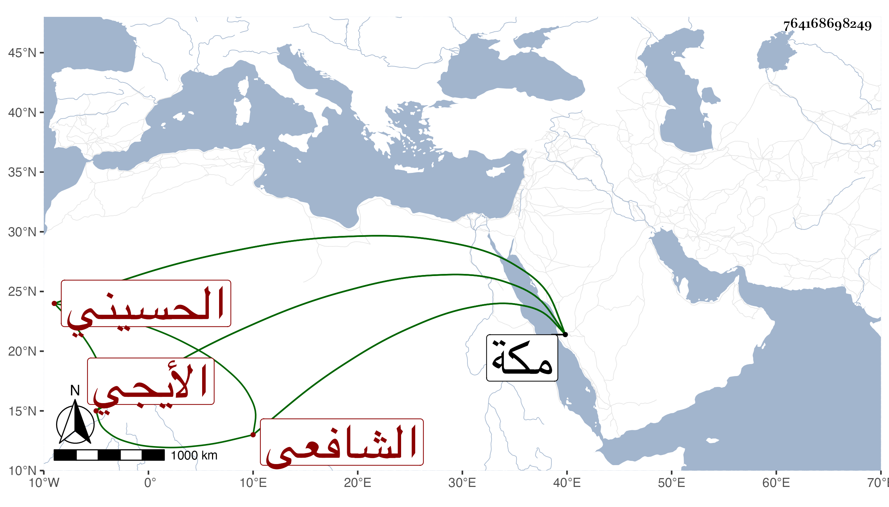

0902Sakhawi.DawLamic.ITO20230111-ara1.EIS1600.764168698249
Biography ID: 764168698249
323
محمد بن عبيد الله بن محمد بن محمد بن محمد بن عبد الله الصفي أبو بكر ابن النور بن العلاء بن العفيف الحسيني الأيجي الشافعي شقيق العفيف عبد الرحمن وحبيب الله الماضيين وهذا أكبر الثلاثة ، أمهم بديعة ابنة النور أحمد بن الصفي ولد في ثامن عشر ربيع الثاني سنة إحدى وسبعين وثمانمائة ونشأ في كنف أبويه فاشتغل عنده وعند عبد المحسن الشرواني في النحو والصرف وغيرهما ، وأقام مع أبويه بمكة ولازمني في سنة ست وثمانين قراءة وسماعا وكتبت له إجازة في التاريخ الكبير بعضها ، ثم سافر مع أبيه إلى بلادهم وزوجه ابنة ابن عمه ورجع لمكة في موسم سنة أربع وتسعين .
